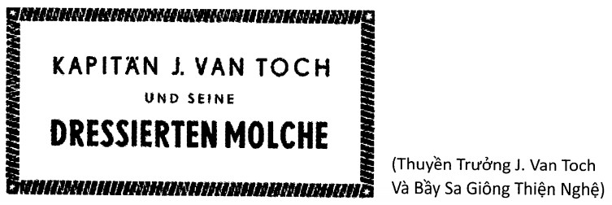
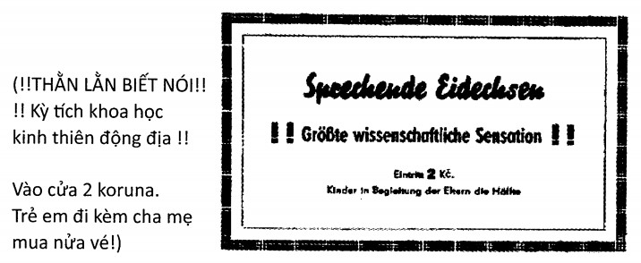

Ông Povondra, người gác cửa tư gia ông Bondy, đang về quê nghỉ phép. Ngày mai sẽ có hội chợ ở đây; và khi ông Povondra dắt tay Frantik, thằng con trai tám tuổi, đi chơi thì khắp thị trấn Nové Strašecí thơm lừng mùi bánh, bên kia đường đám đàn bà con gái lăng xăng mang những mẻ bột mới nhồi tới lò nướng, ở công viên đã có hai gian hàng bán bánh ngọt và cà phê được dựng lên, thêm một sạp hàng đồ sứ và pha lê, một sạp của một bà đang hò hét rao bán hàng áo quần đủ các loại. Và ở đó đã xuất hiện một lều bạt bốn bề che kín bằng vải dầu. Một người đàn ông khá nhỏ con đứng trên chiếc thang đang treo một tấm biển lên.
Ông Povondra dừng lại để xem tấm biển viết gì.
Gã bé choắt kia leo xuống thang rồi hài lòng ngước nhìn tấm biển vừa treo, và ông Povondra ngạc nhiên khi đọc được.

Ông Povondra nhớ đến người đàn ông mập mạp đội mũ thuyền trưởng mà ông đã từng đưa vào gặp ông Bondy, và kết cục là thế này đây, tội nghiệp quá, ông Povondra thương hại nghĩ thầm; là thuyền trưởng mà bây giờ phải đi diễn rong khắp nơi với một gánh xiếc thảm hại như vầy! Ông ta hồi đó thật oai vệ, ngon lành quá chừng! Chắc mình nên vào hỏi thăm ổng một cái, ông Povondra thương cảm nghĩ.
Trong lúc đó, gã bé choắt kia đã treo một tấm biển thứ hai ngay cửa vào lều bạt:

Ông Povondra ngần ngừ. Hai đồng koruna và thêm một đồng nữa cho thằng nhỏ; đâu có rẻ. Nhưng thằng Frantik học giỏi và đã biết hết các loài thú lạ mà ở trường đã dạy. Ông Povondra sẵn sàng hy sinh thêm chút ít vì sự nghiệp giáo dục, và thế là ông đi tới chỗ gã nhỏ con loắt chắt kia.
- Anh bạn, - ông nói, - tôi muốn nói chuyện với Thuyền trưởng van Toch.
Gã kia ưỡn bộ ngực khuất dưới lớp áo thun sọc.
- Là tôi đây, thưa ông.
- Ông là Thuyền trưởng van Toch? - Ông Povondra sửng sốt.
- Đúng rồi, ông, - gã choắt vừa nói vừa chỉ vào hình mỏ neo xăm trên cổ tay gã.
Ông Povondra chớp mắt liên tục, vẻ trầm ngâm. Làm sao ông thuyền trưởng lại teo tóp tới mức này được chớ? Vô lý quá. Ông nói:
- Tôi đã từng quen biết Thuyền trưởng van Toch. Tôi là Povondra.
- À, vậy là chuyện khác rồi, - gã choắt nói. - Nhưng đám sa giông này đúng là của Thuyền trưởng van Toch đó, thưa ông. Bảo đảm thằn lằn chính hiệu Úc, thưa ông. Xin mời vào trong xem. Buổi diễn chính sắp bắt đầu rồi, - gã vừa nói vừa nhấc tấm bạt che lối vào.
- Đi nào, Frantik, - bố Povondra nói và hai cha con vào trong. Phía sau chiếc bàn nhỏ, một người đàn bà to lớn, mập ú dị thường hấp tấp ngồi xuống. Một cặp xứng đôi gớm, ông Povondra nghĩ thầm trong lúc trả ba đồng koruna. Trong lều chẳng có gì ngoài một mùi khá khó chịu và một cái bồn tắm bằng sắt tây.
- Mấy con sa giông đâu? - ông Povondra hỏi.
- Trong cái bồn tắm đó, - người đàn bà đồ sộ kia trả lời tỉnh bơ.
- Đừng có sợ, Frantik, - bố Povondra vừa nói vừa bước tới gần bồn tắm. Nằm im lìm dưới nước trong bồn là một con gì đen thui, trông như một con cá trê to tướng, chỉ khác ở chỗ cái đầu hình như dẹp hơn và lớp da phía sau đầu đang co giãn phập phồng khe khẽ.
- Đây là loài sa giông tiền Đại hồng thủy mà báo chí lâu này cứ nói tới hoài đó con,- ông bố Povondra lên giọng giảng dạy, nhưng cố không để cho thằng con thấy sự thất vọng của ông. (Lại bị lừa nữa rồi, ông nghĩ thầm, nhưng thằng nhỏ không cần biết chuyện đó làm gì. Ba koruna coi như tiêu tùng!) .
- Bố, sao nó ở dưới nước? - Frantik hỏi
- Vì loài sa giông sống dưới nước mà con.
- Bố, nó ăn gì, bố?
- Cá và các thứ tương tự, - bố Povondra nói đại. (Thì nó cũng phải ăn cái gì chứ) .
- Sao mà nó xấu xí vậy, bố? - Frantik cứ hỏi dồn.
Ông Povondra chẳng biết trả lời sao; nhưng đúng lúc đó gã nhỏ con loắt choắt kia đã bước vào trong lều.
- Kính chào quý vị khán giả, - gã cất giọng khàn khàn.
- Ông chỉ có mỗi một con sa giông thôi à? - ÔngPovondra hỏi với giọng lên án. (Nếu như có được hai con thì ít ra cũng đáng đồng tiền, ông nghĩ thầm) .
- Con kia chết rồi, - gã choắt nói. - Và đây, kính thưa quý vị, đây là con Andrias lừng danh, loài thằn lằn độc địa quý hiếm từ các hòn đảo Australia. Trong môi trường tự nhiên, nó lớn bằng cỡ con người và đi bằng hai chân. Nào, - gã vừa gọi vừa cầm cây khều con vật đen thui đờ đẫn nằm im trong bồn tắm. Cái hình thù đen đúa ấy hơi nhúc nhích rồi gắng gượng trồi lên mặt nước. Frantik lùi lại một bước nhưng ông Povondra đã nắm chặt tay con: Đừng sợ, có bố đây mà.
Con vật bây giờ đang đứng trên hai chân sau, hai chân trước chống vào thành bồn tắm. Những cái mang phía sau đầu co giật loạn xạ và cái mõm đen há ra thở hổn hển. Bộ da lùng nhùng đầy mụn cóc và trầy xước rướm máu, mắt tròn như mắt ếch và có vẻ đau đớn mỗi lần nhắm lại bằng màng da mỏng ở mi dưới.
- Kính thưa quý vị, như quý vị đã thấy, - gã choắt tiếp tục với cái giọng khàn khàn, - đây là loài vật sống dưới nước; đó là lý do nó vừa có mang vừa có phổi để hít thở khi nó bò lên cạn. Chân sau nó có năm ngón, còn chân trước bốn ngón, giúp nó cầm nắm đủ thứ đồ vật. Xem đây. - Con vật co những “ngón tay” quắp lấy cây gậy và đưa ra trước mặt nó như đang giơ ra một cây vương trượng thảm hại.
- Nó cũng biết thắt gút dây, - gã choắt tuyên bố rồi lấy lại cây gậy và đưa cho con sa giông một mẩu dây bẩn thỉu. Con vật giữ mẩu dây trong tay một lúc và sau đó quả thật nó thắt được một cái gút.
- Nó cũng biết đánh trống và nhảy múa, - gã choắt vừa nói vừa cười khùng khục trong lúc đưa cho con vật một cái trống và cái dùi của trẻ con. Con vật gõ trống mấy cái và uốn éo phần thân trên; rồi đánh rơi cái dùi xuống nước. - Làm cái trò gì thế, đồ súc sinh? - Gã choắt quát nạt trong lúc thò tay xuống đáy bồn móc cái dùi lên.
- Và con vật này, - gã lại lên giọng trịnh trọng giới thiệu, - thông minh và tài giỏi tới mức nó có thể nói chuyện như con người. - Gã vừa quảng cáo vừa vỗ tay.
- Guten Morgen, - vừa đau đớn chớp mi dưới, con vật cất giọng khọt khẹt nói tiếng Đức rồi chuyển sang tiếng Tiệp. - Xin chào.
Ông Povondra đâm hoảng, nhưng thằng Frantik con ông thì hình như chẳng thấy ấn tượng gì.
- Mày nói gì với quý khán giả đi chứ? - Gã choắt gằn giọng.
- Chào mừng quan khách, - con sa giông cúi chào; hai cái mang co giật loạn xạ. Rồi nó chuyển sang chào tiếng Đức và tiếng Ý. - Willkommen. Ben Venuti.
- Mày biết làm tính không?
- Tôi biết.
- Sáu nhân bảy bằng bao nhiêu?
- Bốn… hai, - con vật gắng gượng nói khò khè.
- Đó, thấy chưa, Frantik? - Bố Povondra xác nhận. - Con này biết làm tính.
- Kính thưa quý vị, - gã choắt rống lên, - xin mời quý vị đặt câu hỏi.
- Hỏi nó cái gì đi con, - bố Povondra thúc giục. Frantik nhút nhát lắc đầu. Mãi hồi sau chú nhóc mới bật ra được một câu.
- Tám nhân chín bằng bao nhiêu? - Với Frantik, đây có lẽ là câu hỏi hóc búa nhất trần đời.
Con sa giông ngẫm nghĩ một lúc.
- Bảy… hai.
- Hôm nay thứ mấy? - ông Povondra hỏi.
- Thứ Bảy, - con sa giông trả lời.
Ông Povondra rất là thán phục.
- Thật giống y như người. Thành phố này tên gì?
Con sa giông há mồm và nhắm mắt lại.
- Nó mệt rồi, - gã choắt hấp tấp kêu lên. - Bây giờ mày nói gì với quý vị khán giả đi chứ?
Con sa giông cúi chào.
- Hân hạnh. Xin cảm ơn. Tạm biệt Goodbye. - Rồi nó liền lặn trốn dưới đáy bồn tắm.
- Con này… con này thật lạ lùng, - ông Povondra kinh ngạc; nhưng chỉ thế này thì ba đồng koruna vẫn còn quá đắt, nên ông nói thêm. - Thế anh còn cái gì khác cho thằng nhỏ xem không?
Gã choắt lúng túng bặm môi.
- Hết rồi, - gã nói. - Tôi từng có mấy con khỉ, nhưng nghề này rắc rối lắm, - gã giải thích một cách mơ hồ. - Trừ phi tôi cho ông xem vợ tôi. Vợ tôi từng là người đàn bà mập nhất thế giới. Maruška, lại đây!
Maruška khó nhọc đứng dậy.
- Chuyện gì?
- Để cho quý vị đây nhìn em một cái, Maruška.
Người đàn bà mập nhất thế giới nũng nịu nghiêng đầu qua một bên, nhấc chân này đặt trước chân kia và nâng tà váy lên cao quá gối. Động tác này phô ra chiếc vớ len màu đỏ bọc bên ngoài một thứ gì căng phồng như một khúc giăm-bông vĩ đại.
- Số đo vòng đùi của vợ tôi là tám mươi bốn centimet, - gã choắt giải thích, - nhưng thời buổi này cạnh tranh nhiều quá nên Maruška không còn là người đàn bà mập nhất thế giới nữa.
Ông Povondra vội lôi thằng con Frantik đang sững sờ đi ra. - Hẹn gặp lại, - một tiếng nói khò khè từ trong bồn tắm vọng ra. - Come again. Auf wiedersehen.
- Con thấy sao, Frantik? - ông Povondra hỏi khi hai bố con đã ra ngoài. - Có học hỏi được gì không?
- Có, bố, - Frantik đáp. - Tại sao bà mập kia mang vớ đỏ?